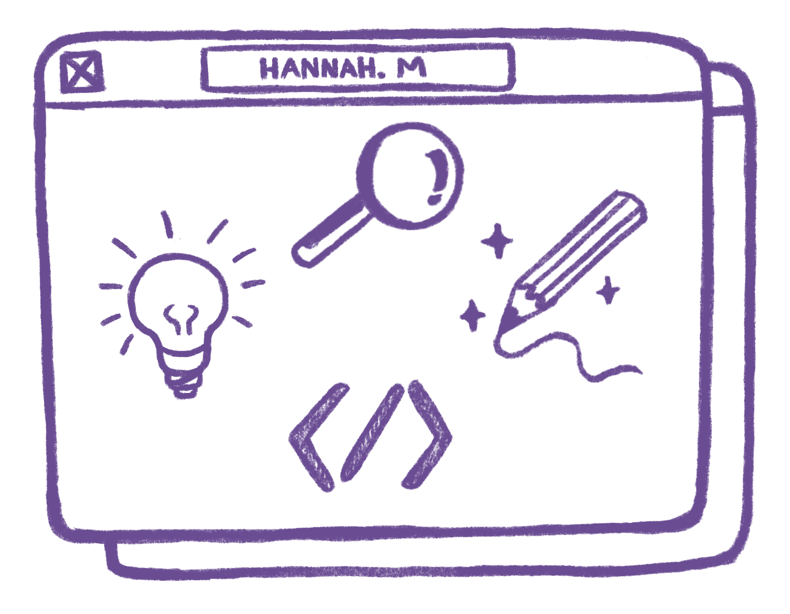
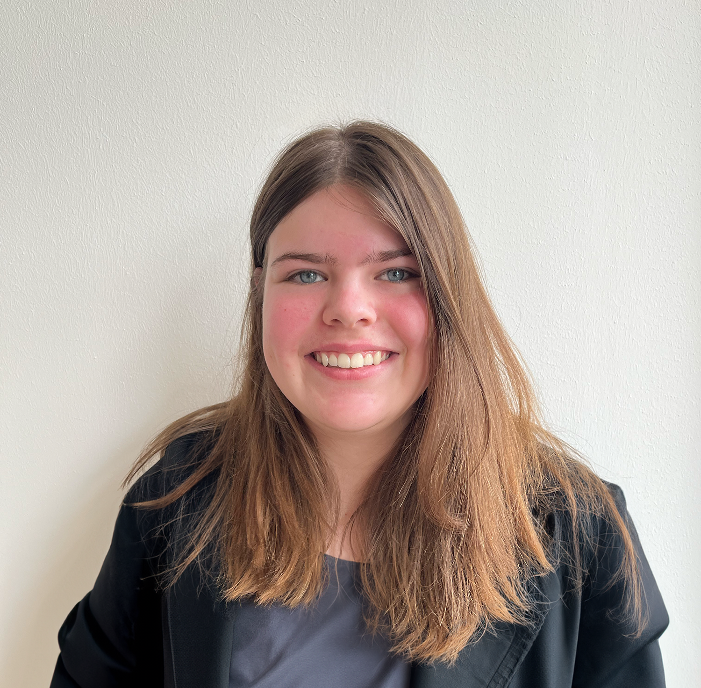

Hannah Menninga
Grafisch Designer & UX Designer
HBO 4 Communication & Multimedia Design

Met onderzoek, conceptontwikkeling, vormgeving, en illustratie werk ik ideeën uit tot print, digtaal en interactieve ervaringen.
Mijn werk
Ik ben Hannah Menninga,
Grafisch Designer & UX Designer.
Recentelijk afgestudeerd aan de opleiding Communication & Multimedia Design (Bachelor of Science), en ben op zoek naar een vervolgstap.
Ik werk met passie aan grafisch design enexperience design. Hierin blijf ik mezelf uitdagen in design thinking, nieuwe tools en planning.
Structuur vind ik essentieel in creatieve processen.
In team-projecten neem ik dan ook graag de verantwoordelijkheid voor planning en organisatie.
Deze vaardigheden zet ik graag in voor onderzoek, webdesign, design voor print, interactieve prototypes, en installaties.
Buiten school ben ik graag bezig met tekenen, puzzelen, films kijken en lezen.